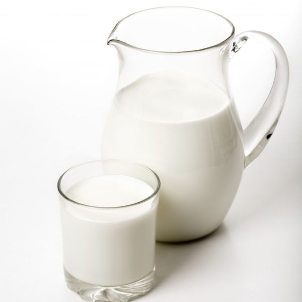
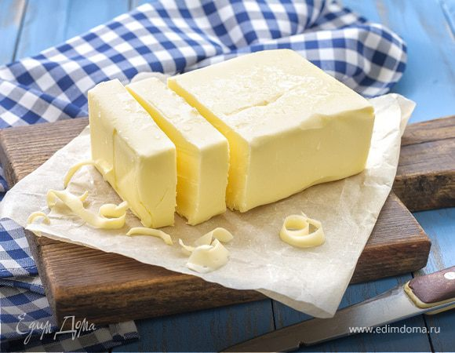
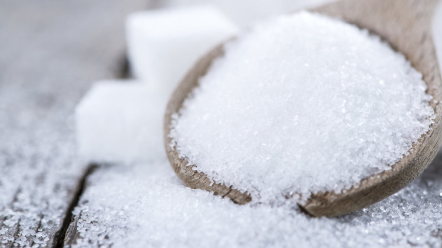
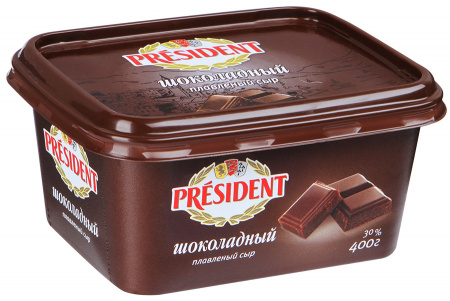
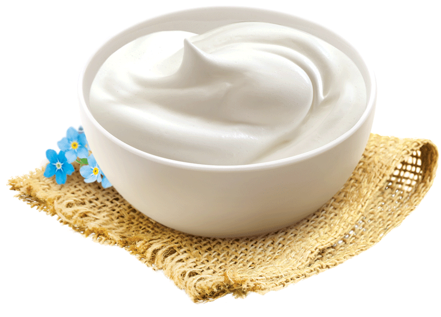
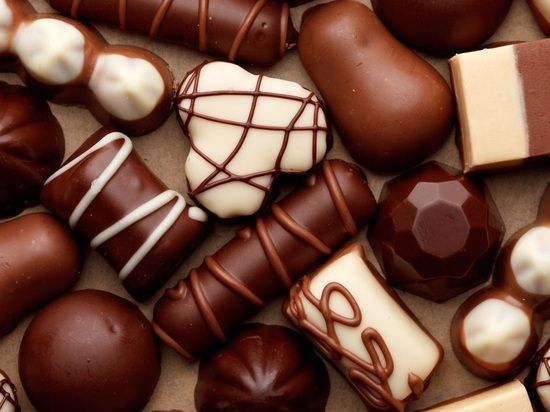

| Описание | Мой сегодняшний рецепт для сладкоежек и любителей шоколада. В тесте для блинов присутствует какао, а в креме — шоколадный плавленый сыр. |
| Каллории | 549 кКал |
Информация о блюде



2 ст


30 гр

6 ст.л.

230 гр

250 гр



1 штука
Способ приготовления
- Соединить яйца, сахар, ванилин, соль, взбить.
- Влить 1 стакан теплого молока, перемешать.
- Просеять в миску порошок какао, перемешать.
- Муку просеять и, постоянно перемешивая жидкость, всыпать порциями.
- Перемешать до однородной массы. Получится довольно густое тесто.
- Понемногу вливать оставшееся теплое молоко, интенсивно перемешивая массу. Дать тесту постоять 15–20 мин.
- Сливочное масло растопить и влить в тесто, перемешать до однородности.
- Сковороду разогреть. С помощью кисточки смазать растительным маслом. Вылить часть теста, распределив его по всей сковороде. Выпекать блинчик сначала с одной стороны до легкого румянца.
- Затем перевернуть на другую сторону и допечь.
- Готовые блинчики складывать в тарелку. У меня получилось 14 шт.
- Для крема соединить сметану, сахар и плавленый шоколадный сыр, взбить миксером до однородного состояния.
- Смазывать кремом блинчики и укладывать друг на друга.Для украшения натереть на терке шоколадную конфету и посыпать торт.
- Наш блинный торт готов!
- Разрезать его на порции и подать к столу. Приятного аппетита!